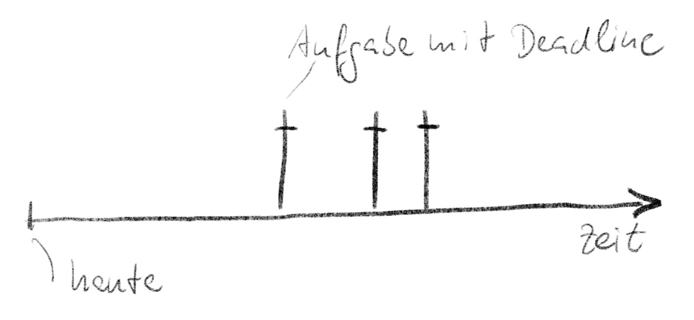
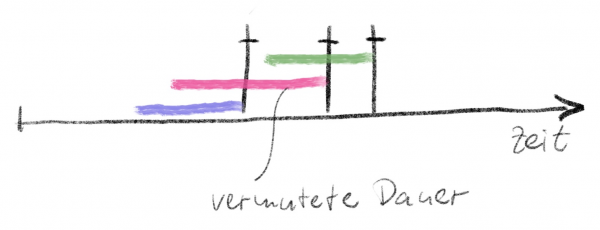
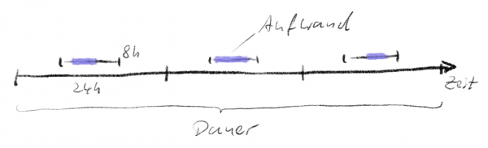
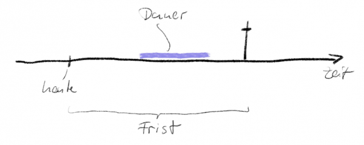
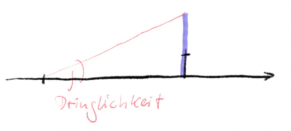
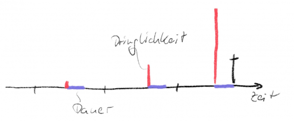
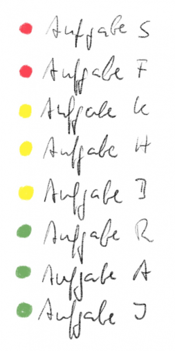
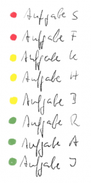
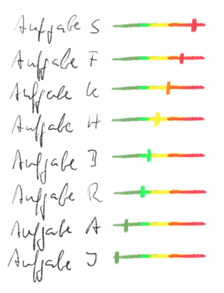
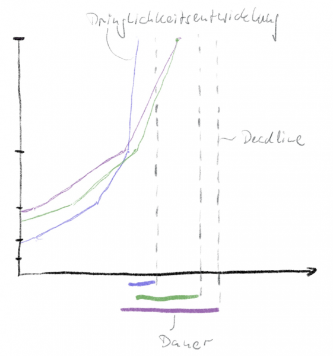

Was ist eigentlich dringend? – Die Eisenhower Matrix II
Mit der Eisenhower-Matrix priorisieren Sie Aufgaben nach Dringlichkeit und Wichtigkeit. Das scheint intuitiv einfach – ist es am Ende dann aber doch nicht. Denn was ist „wichtig“, was ist „dringend“? Sie haben für beides ein Gefühl – nur trügt uns das Gefühl immer wieder. Und im Zweifelsfall belastet eine Gefühlsentscheidung im Arbeitsalltag. Sie ist für andere nicht nachvollziehbar und unterliegt Trugschlüssen und Voreingenommenheiten und hat keinen objektivierbaren Bezugspunkt. Ich bin deshalb dafür, hinter die Begriffe zu schauen und genauer zu verstehen, was damit gemeint ist.
In einem ersten Beitrag habe ich das für die Wichtigkeit schon getan. Dabei kam heraus, dass Wichtigkeit gar keine Eigenschaft von Aufgaben ist, sondern der dahinter stehenden Ziele. Die Wichtigkeit eines Zieles ist von dessen Wert, der bis zu dessen Erreichung noch verbleibenden Frist und der Gefahr einer schnellen Risikosteigerung abhängig.
Aufgaben sind also nicht mehr oder weniger wichtig. Das sind vielmehr die Ziele, die Sie mit ihrer Erledigung verfolgen.
Und wie steht es dann mit der Dringlichkeit? Wozu gehört sie? Wie wird sie bestimmt?
Dringende Aufgaben
Dringlichkeit ist tatsächlich eine Eigenschaft von Aufgaben. Was dringend ist, muss jetzt oder zumindest sehr bald erledigt werden. Die Zeit ist knapp. Dringlichkeit hat deshalb mit Stress zu tun. Was dringend ist, das drückt, das bestimmt, das zwingt sie zum Reagieren.
Je mehr Aufgaben mit hoher Dringlichkeit auf Ihrem Tisch liegen, desto weniger wissen Sie, wo Ihnen der Kopf steht. Sie entwickeln einen Tunnelblick und treffen tendenziell schlechtere Entscheidungen.
Ziel der Kategorisierung mit der Eisenhower-Matrix ist es, Ihnen das bewusst zu machen und Sie in ruhigere Gewässer zu bringen. Es geht um proaktive Aufgabenbehandlung, bevor die Dringlichkeit sie einengt.
Aufgaben werden „aus der Wichtigkeit geboren“. Je nachdem wie wichtig ein Ziel ist, definieren Sie Aufgaben zu seiner Erreichung unterschiedlich. Den Aufgaben selbst hängt jedoch keine Wichtigkeit mehr an. Die ist vielmehr in Dringlichkeit übersetzt worden.
Das ist für mich ein zentraler Punkt für das bessere Verständnis der Eisenhower-Matrix: Aufgaben sind nicht wichtig und dringend, sondern Wichtigkeit wird durch Dringlichkeit ausgedrückt. Aufgaben sind lediglich unterschiedlich dringend. Und das macht es auch erst möglich, wirklich einfach zu priorisieren. Mehr dazu im nächsten Artikel.
Dringende Eigenschaften
Um die Dringlichkeit zu objektivieren, müssen wir genauer hinschauen, was Aufgaben sind. Es reicht nicht, eine knackige Beschreibung in einer ToDo-Liste stehen zu haben oder eine Email in Outlook mit einem Fähnchen zu markieren. Damit bekommen Sie keinen Überblick über unterschiedliche Dringlichkeiten und deren Entwicklung.
Keine Aufgabe ohne Deadline
Stress spüren Sie, wenn Ihnen die Zeit davon läuft, um eine Aufgabe hochqualitativ zu erledigen. Dringlichkeit hat also immer mit einer Frist zu tun. Ohne Deadline keine Dringlichkeit.

Solange Sie mit Aufgaben zu tun haben, denen keine Frist anhängt, können die nicht dringend sein und Ihnen also keinen Stress machen.
Ich formuliere deshalb sogar (ein wenig überspitzt): Aufgaben ohne Deadline können Sie getrost vergessen. Es kräht eh kein Hahn danach. Und wenn Sie sie doch auf Ihre ToDo-Liste nehmen, sind das die ersten Aufgaben, die Sie ewig vor sich her schieben werden. Fristlose Aufgaben sind aus meiner Sicht Ballast. Werfen Sie ihn über Bord. Sie werden sich leichter fühlen.
Und wenn Ihnen jemand eine Aufgabe andient, dann fragen Sie sofort nach einer Deadline. Falls Ihr Auftraggeber keine nennt, verhandeln Sie trotzdem eine – oder lehnen Sie rundheraus ab.
Keine Aufgabe ohne Dauer
Ist eine Aufgabe mit Deadline aber schon gleich eine dringende Aufgabe? Nein. Beispiel Steuererklärung: Die Aufgabe, Ihre Steuererklärung zu machen, steht mit einer Deadline schon am Anfang des Jahres fest. Am 1.1.2018 wissen Sie, dass Sie z.B. spätestens am 28.2.2019 Ihre Steuererklärung gemacht haben wollen/müssen. Dennoch sind Sie am 1.1.2018 oder auch am 12.5.2018 oder am 27.9.2018 noch ganz entspannt. Sie fühlen keine Dringlichkeit. Die lässt Sie erst vielleicht Ende Januar 2019 unruhig werden.
Aber warum ist eine Aufgabe mit Deadline nicht automatisch dringend? Weil die Dringlichkeit eine Verhältniszahl ist. Sie hat etwas mit der verbleibenden Frist im Verhältnis zur Zeit, die Sie zur Erledigung der Aufgabe brauchen, zu tun.
Die Zeitspanne vom Beginn der Arbeit an einer Aufgabe bis zu ihrer Erledigung nenne ich Erledigungsdauer oder kurz Dauer.

Solange Sie also für eine Aufgabe keine zumindest halbwegs klare Vorstellung von der Dauer haben, können Sie die Dringlichkeit nicht realistisch bestimmen.
Wie lange dauert es, die Steuererklärung zu erledigen? Sind es wenige Stunden oder Tage? Nehmen wir an, es sind sogar 5 Tage, weil Sie dafür in Unterlagen herumkramen müssen und sich immer nur am Abend für kurze Zeit mit der unseligen Aufgabe beschäftigen wollen. Damit ist klar, warum Sie die Steuererklärung selbst am 3.1.2019 noch nicht als dringend empfinden. Im Verhältnis zur Erledigungsdauer von 5 Tagen ist die Zeit bis zur Deadline deutlich länger.
Ob es deshalb für Ihre Aufmerksamkeitsgestaltung vorteilhaft ist, die Steuererklärung am 3.1. noch nicht anzugehen, lasse ich mal dahingestellt. Zumindest finde ich es erstmal verständlich, wenn Sie die Aufgabe noch nicht als dringend empfinden.
Dauer vs Aufwand
Bitte verwechseln Sie die Dauer nicht mit dem Aufwand! Der Aufwand bezeichnet die Zeit, die Sie tatsächlich in eine Aufgabe investieren. Bei der Steuererklärung sind das vielleicht 4,5 Stunden.
Auch wenn der Aufwand den Preis darstellt, den Sie in Form von Zeit für eine Aufgabe bezahlen, ist der Aufwand für den Zweck der Priorisierung unwesentlich.
Insbesondere wenn Sie mit anderen zusammenarbeiten und verlässlich liefern wollen, interessieren sich Ihre Kooperationspartner nicht dafür, wie viel Arbeit Sie in eine Aufgabe stecken. Sie sind einzig daran interessiert, wie lange es dauert, bis Sie Ihr Ergebnis liefern.
Wenn sich 4,5 Stunden auf 5 Tage aus welchen Gründen auch immer ausdehnen, dann ist das die entscheidende Information für andere (und für Sie selbst).
Es gilt: Dauer > Aufwand. Und es gibt viele Gründe, warum die Dauer größer als der Aufwand ist, z.B.
- Sie können mit der Erledigung der Aufgabe nicht sofort bei Auftragsannahme beginnen.
- Aufgaben erfordern mehr Aufwand als Sie „in einem Rutsch“ leisten können.
- Bei der Erledigung bemerken Sie unvorhergesehen, dass Ihnen etwas fehlt, worauf Sie warten müssen.
- Die Arbeit erweist sich als schwieriger als gedacht.
Aufmerksamkeitsdichte
Ein wesentlicher Grund dafür, dass die Dauer den Aufwand oft deutlich überschreitet ist, dass Sie einer Aufgabe keine ununterbrochene Aufmerksamkeit schenken wollen oder können.
Wenn eine Aufgabe 2 Stunden Aufwand braucht und Sie die an einem Stück investieren, dann ist das Verhältnis der verstrichenen Zeit zum Aufwand 1:1.
Wenn Sie jedoch eine 8-Stunden-Aufgabe, die Sie theoretisch an einem Arbeitstag erledigen könnten, über 3 Tage, also 24 Arbeitsstunden strecken, dann ist das Verhältnis 8/24=0,33.

Ich nenne dieses Verhältnis Aufmerksamkeitsdichte. Sie berechnet sich, in dem man den Aufwand – also aufmerksame Zeit – durch die Dauer teilt. (Allerdings würde ich in diesem Fall für die Dauer nur realistisch zur Verfügung stehende Zeit einsetzen: nicht 24 Lebenszeitstunden pro Tag, sondern z.B. 8 Arbeitsstunden.)
Im Idealfall ist 1,0 Ihre Aufmerksamkeitsdichte für alle Aufgaben. Jede zur Verfügung stehende Zeit ab Erledigungsbeginn wird dann auch genutzt für eine Aufgabe bis zur Fertigstellung.
Leider ist das nur selten der Fall. Das ist das große Drama der Arbeit im Office. Solange Sie sich nicht sehr stark dafür machen, wird Ihre Aufmerksamkeit zwischen wechselnden Aufgaben und Unterbrechungen zerrissen. Das Resultat: Sie fühlen sich erschöpft und haben zurecht doch nicht das Gefühl, etwas geschafft zu haben.
Es gibt jedoch eine Kraft, die Ihre Aufmerksamkeit wie von Zauberhand verdichtet: Dringlichkeit.
Die Dringlichkeit bestimmen
Keine Aufgabe ohne Frist, keine Aufgabe ohne Dauer. Alles andere sollten Sie gar nicht in Ihre Priorisierung einbeziehen. Nehmen Sie das in Ihre Triage-Checkliste auf.
Lassen Sie sich auch nicht davon beirren, dass jemand Ihnen eine Aufgabe als „ganz wichtig“ verkauft. Aufgaben haben keine Wichtigkeit! Wichtigkeit muss sich in Dringlichkeit ausdrücken. Alles andere verwirrt Sie nur und ist zu kompliziert im Alltag.
Gerade wenn jemand seine Aufgabe für wichtig hält, muss sie eine Deadline aufweisen und Sie müssen eine Idee für die Dauer entwickeln, falls Sie sie zur Erledigung annehmen. Lassen Sie sich dann erklären, warum das dahinter stehende Ziel so wichtig ist; daraus leiten Sie eine Dauer bei einer gewissen Aufmerksamkeitsdichte ab. Und schon haben Sie alles beisammen für die Bestimmung der für Aufgaben einzig wichtigen Dringlichkeit.
Einerseits ist Dringlichkeit ein Gefühl. Das möchte ich Ihnen nicht nehmen, damit reagieren Sie reflexartig bei Ansicht einer Aufgabe. Allerdings halte ich es nicht für belastbar in einer Diskussion mit anderen. „Ich glaube, das ist jetzt ganz dringend…“ ist kein Argument, sondern ein Zeichen mangelnder Systematik.
Ich schlage Ihnen deshalb einen völlig unemotionalen Weg zur Bestimmung der Dringlichkeit von Aufgaben vor. Den können Sie auch im Kreuzfeuer des Alltags gehen.
Wie oben schon angedeutet, ist Dringlichkeit eine Verhältniszahl. Sie berechnet sich wie folgt:
Dringlichkeit = Dauer / Frist
Hier sehen Sie die Dauer in Relation zur Frist von einem angenommenen Heute:

Und hier das Verhältnis etwas mathematischer ausgedrückt in Form einer Steigung oder Steilheit. Die Dringlichkeit drückt sich in dieser Darstellung im Winkel zwischen den Geraden aus: Je näher Frist und Dauer sich im Wert gleichen, desto größer ist der Winkel und desto steiler verläuft die rote Linie:

Beispiel Steuererklärung
- 5 Tage Dauer
- 4,5 Stunden Aufwand
- Ressourcendichte 0,23 (4,5 Stunden Aufwand im Rahmen von 5 Tagen mit jeweils 4 zur Verfügung stehenden Abendstunden)
Die Dringlichkeit entwickelt sich über die Zeit wie folgt:
- Am 1.1.2018 ist sie mit einer groben Frist von 424 Tagen 5/424=0,012.
- Am 1.12.2018 ist sie 5/89=0,056.
- Am 1.2.2019 ist sie 5/28=0,178.
- Am 18.2.2019 ist sie 5/10=0,5.
- Am 23.2.2019 ist sie 5/5=1.
- Am 26.2.2019 ist sie 5/2=2,5.
Im Bild die Monate Dezember bis Februar: die Dringlichkeit wächst mit der Annäherung des Betrachtungszeitpunkts an die Deadline.

Wann ist die Aufgabe nun dringend? Immer. Nur mal weniger und mal mehr. In der Eisenhower-Matrix werden deshalb Wichtigkeit und Dringlichkeit in einem Koordinatensystem dargestellt. Beide Größen können ganz unterschiedliche Werte annehmen, die sich über die Zeit auch noch verändern.
Für die Wichtigkeit habe ich im ersten Artikel Vorschläge gemacht, wann sie in die Kategorien A und B fällt.
Für die Dringlichkeit sehe ich das so:
- Höchst dringend sind Aufgaben spätestens ab einem Wert von 1,0. Sie benötigen sofortige Aufmerksamkeit. Ab jetzt muss mit der Erledigung bei definierter Aufmerksamkeitsdichte begonnen werden, sonst reicht die verbleibende Frist nicht mehr für die Dauer.
- Dringend im Sinne einer bewussten Planung sind Aufgaben allerdings schon ab einem Wert von 0,5. Es ist zwar noch doppelt so viel Zeit bis Fristende wie für die Erledigung angesetzt, doch das ist im realen Leben kein besonders großer Puffer. Es ist hohe Zeit, die Aufmerksamkeit jetzt bewusst in Bezug auf diese Aufgaben zu gestalten.
Dass Sie für die Erledigung besser keine sehr hohe Aufmerksamkeitsdichte annehmen, sollte klar sein. Mehr als einen Wert von 0,6 kann ich nicht empfehlen. Das entspricht 40% Pufferzeit und selbst das bedeutet, dass Sie sich auf die Aufgabe voll konzentrieren müssen. Die Pufferzeit wird von Unvorhergesehenem aufgefressen.
Die Dringlichkeitsampel
Um die Dringlichkeit im Überblick zu behalten, schlage ich Ihnen eine Ampel vor:
- Rot sind Aufgaben ab einem Dringlichkeitswert >= 1,0.
- Gelb sind Aufgaben mit >= 0,5.
- Grün sind Aufgaben mit < 0,5.


Das sind grobe Werte, die vor allem leicht zu merken sind. Experimentieren Sie damit herum. Und wenn Sie feststellen, dass niedrigere Schwellwerte besser sind, dann bin ich nicht verwundert.
Eine Ampel ist einfach darzustellen und zu berechnen. Aufwändiger, aber aussagekräftiger wäre es natürlich, die Farben in einander übergehen zu lassen. Dann würde für mich Gelb schon zu Rot im Bereich von 0,75 bis 1.0. Und Grün würde zu Gelb im Bereich von 0,25 bis 0,5. Oder so ähnlich.

Zusammenschau
Die Dringlichkeit in eine greifbare Zahl zu übersetzen, halte ich für extrem hilfreich. Nicht nur sehen Sie jetzt im wahrsten Sinn des Wortes klarer, Sie bekommen damit auch Stellschrauben an die Hand.
Was tun, wenn eine Aufgabe auf Rot steht? Sie können und sollten sofort damit beginnen. Aber Sie können auch Hilfe an Bord holen, um die Dauer zu verringern. Oder Sie erhöhen die Aufmerksamkeitsdichte, um die Dauer zu verringern. Oder Sie schieben die Frist hinaus.
Das sind natürlich Ihnen bekannte und auch von Ihnen praktizierte Maßnahmen, nur sehen Sie sie jetzt in Bezug auf „harte Fakten“. Wenn Sie Maßnahmen ergreifen und die Werte für Frist, Dauer und Aufmerksamkeitsdichte aktualisieren, verändert sich das Dringlichkeitsbild im Überblick sofort.
Vor allem bekommen Sie mit einer zahlenbasierten ToDo-Liste eine Vorausschau, die Ihnen auf einen Blick zeigt, wie sich die Dringlichkeit entwickeln wird. Hier ein beispielhafter Graph für drei Aufgaben:

Aufgaben sind nicht länger stumme und starre Steine in Ihrer Planung, sondern lebendige Elemente, die sich bewegen. Jetzt haben Sie wirklich Steuerungsmasse. Und Sie haben Munition für jedes Gespräch über weitere Aufgaben. Wer von Ihnen etwas will, der muss schon etwas auffahren, um sich gegen Ihre solide Priorisierung durchzusetzen.
Aber davon mehr im nächsten Beitrag.
Weitere Artikel

KI als Copilot für die Assistenz
KI in Form von ChatGPT & Co sind hervorragende neue Werkzeuge im Office-Alltag, um produktiver und ja, auch kreativer, zu werden. Neugier statt Angst ist angezeigt im Umgang mit diesen Werkzeugen, die wie andere Werkzeuge auch …

Veränderung braucht Gewohnheit
Sowohl im Berufs-als auch im Privatleben sind wir ständig im Veränderungsmodus. Manche Veränderungen wollen wir umsetzen, manche müssen wir mitmachen. Wir alles wissen, dass Veränderung nie leicht sind und je länger wir etwas auf …